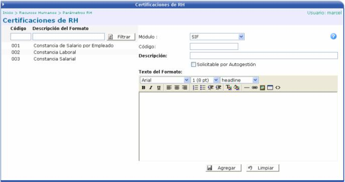

Esta opción le permite al personal de recursos humanos crear el formato de constancias o certificaciones, que la empresa tenga que expedir a sus empleados, en caso de que estos las requieran:

Módulo: escoger en cual módulo se trabajará ese tipo de formato.
Código: identificará el formato de la constancia.
Descripción: nombre del formato.
Solicitable por Autogestión: si este check esta activo, quiere decir que es un formato usado desde el módulo de Autogestión.
Texto del Formato: es una plantilla, donde el usuario digita la información que debe de tener la constancia. Puede hacer uso de diversas variables; insertar imágenes, tablas; cambiar el color de la letra, el tamaño, el tipo; etc.
Para ver con cuales variables
puede el usuario trabajar, solamente se debe de hacer click sobre el icono
-->  y se abrirá
una ventana con una lista de variables a escoger:
y se abrirá
una ventana con una lista de variables a escoger:
|
Variable |
Descripción |
|
#empresa# |
Nombre de la Empresa en la que labora el Empleado. |
|
#identificacion# |
Identificación del Empleado. |
|
#nombre# |
Nombre del Empleado. |
|
#hoy# |
Fecha Actual. |
|
#periodo# |
Periodo en Curso. |
|
#mes# |
Mes en Curso. |
|
#salariomensual# |
Salario Mensual del Empleado. |
|
#salariobruto# |
Salario Bruto del Empleado. |
|
#salarioliquido# |
Salario Líquido del Empleado. |
|
#deducciones# |
Monto total de las deducciones vigentes. |
|
#renta# |
Monto correspondiente al impuesto de renta según salario. |
|
#fechaingreso# |
Fecha de Ingreso del Empleado. |
|
#puesto# |
Puesto. |
|
#oficina# |
Oficina donde labora el Empleado. |
|
#letras# |
Monto en letras. Ej: #letras(#renta#)# |

Una vez que se crea el formato, el usuario puede crearle a un empleado específico, una constancia desde el módulo de Expediente y Nómina en la sección de Consultas y Reportes: “Generar Certificaciones de RH”